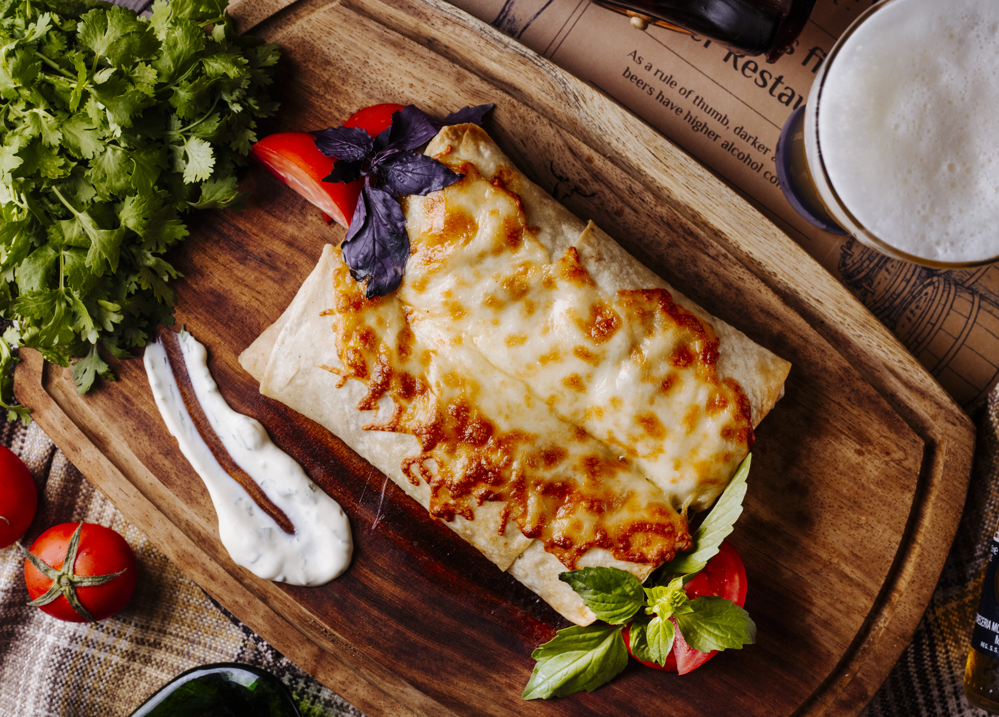

Home
Vegan Lasagna

Why you will love this vegan lasagna
Onion and herbs infuse the layered dish with depth, using
easy-to-assemble steps. Reviewers approve of tofu and
spinach filling for being hearty and flavorful,
converting non-vegans. It holds its shape, isn’t runny, and has a
great taste and texture.
Ingredients for 8 servings of dish:
- 2 tablespoons olive oil,
- 1 ½ cups chopped onion,
- 3 tablespoons minced garlic,
- 4 (14.5 ounce) cans stewed tomatoes,
- ⅓ cup tomato paste,
- ½ cup chopped fresh basil,
- ½ cup chopped parsley,
- 1 teaspoon salt,
- 1 teaspoon ground black pepper,
- 1 (16 ounce) package lasagna noodles,
- 2 pounds firm tofu,
- 2 tablespoons minced garlic,
- ¼ cup chopped fresh basil,
- ¼ cup chopped parsley,
- ½ teaspoon salt,
- ground black pepper to taste,
- 3 (10 ounce) packages frozen chopped spinach, thawed and drained.
Steps
-
Make the sauce: In a large, heavy saucepan, over medium heat, heat the
olive oil. Place the onions in the saucepan and saute them until they
are soft, about 5 minutes. Add the garlic; cook 5 minutes more.
-
Place the tomatoes, tomato paste, basil and parsley in the saucepan.
Stir well, turn the heat to low and let the sauce simmer covered for 1
hour. Add the salt and pepper.
-
While the sauce is cooking bring a large kettle of salted water to a
boil. Boil the lasagna noodles for 9 minutes, then drain and rinse
well.
- Preheat the oven to 400 degrees F (200 degrees C).
-
Place the tofu blocks in a large bowl. Add the garlic, basil and
parsley. Add the salt and pepper, and mash all the ingredients
together by squeezing pieces of tofu through your fingers. Mix well.
-
Assemble the lasagna: Spread 1 cup of the tomato sauce in the bottom
of a 9x13 inch casserole pan. Arrange a single layer of lasagna
noodles, sprinkle one-third of the tofu mixture over the noodles.
Distribute the spinach evenly over the tofu. Next ladle 1 1/2 cups
tomato sauce over the tofu, and top it with another layer of the
noodles. Then sprinkle another 1/3 of the tofu mixture over the
noodles, top the tofu with 1 1/2 cups tomato sauce, and place a final
layer of noodles over the tomato sauce. Finally, top the noodles with
the final 1/3 of the tofu, and spread the remaining tomato sauce over
everything.
-
Cover the pan with foil and bake the lasagna for 30 minutes. Serve hot
and enjoy.